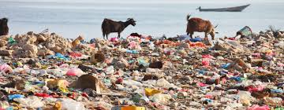
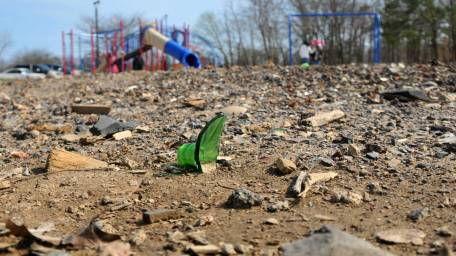
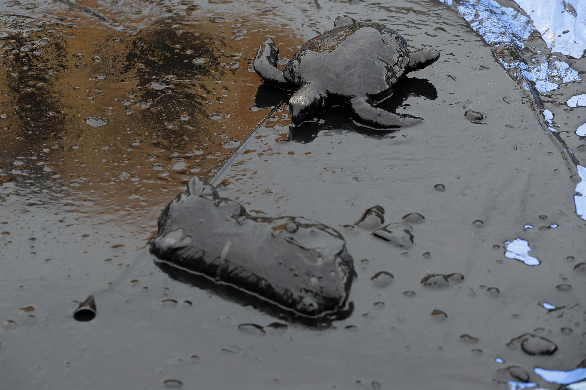
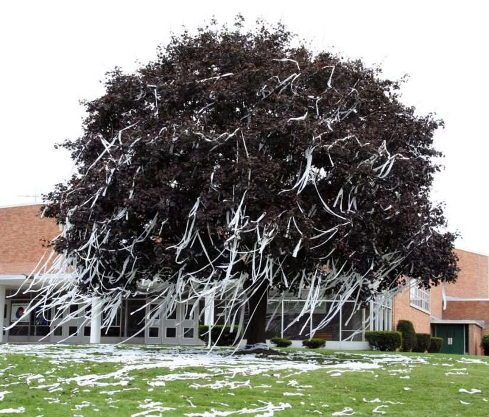

Erie - Erie Beach
Plastic is everywhere on this
beach, and it is extremely harmful to the sea life.
This needs to be cleaned up by taking in and putting
it in garbage bags, and then disposing of the trash
in the right way. Some garbage may need to be picked
up in the water, but the majority of it is on land.
 40 1/25/21 11:00am 40 1/25/21 11:00am
|

Charlestown - Fellowship Park
Studies show that approximately 66 and
2/3% of playgrounds in PA are contaminated with
pollution and not maintained daily. About 50% of those
are visited roughly 25% less than the other 33 and 1/3%.
15% of the 25% of park-goers estimate that, given 40% more
time, 70% of the pollution will increase by up to 7%.
The remaining 85% of citizens who attend parks claim to
see 17% more trash than 13% of the other 15%. With some
simple math, you can find that the 85% plus the 25% of
people plus the 15% of park-goers find that 70% plus 66
and 2/3% of parks plus 25% have 83% of trash divided by
the remaining 17% of pollution. In conclusion, 125% of
people see about 4.88% of pollution at 161 and 2/3 of
parks in PA. This park is a clear example of this,
and we must do something about it!
45 1/23/21 8:00am |

Sometown - Lago Lake
Though there is much concern
for the pollution in the oceans, there is no need for
human interaction to clean it up. With the recent
discovery of a turtle with over 40 separate pieces of
plastic in its stomach, researchers estimate that
within the next 20 years, these turtles will have
every ocean completely clean! (Besides, plastic
straws are a necessary part of a turtle's diet!)
60 1/24/21 12:30pm |

Shellsburg - Tortuga Lake
I was walking along the beach
and I saw this turtle struggling to stay alive. When
I saw that he was about to die, and the only thing
that could save him is if someone were to help him,
my first reaction was to take a bunch of pictures
and post them on social media. The turtle is dead
now. Please help!
120 2/16/21 8:00am |

Agualaburg - Mierda Stream
People in my community keep allowing
a bunch of sewage to be dumped into this creek. This
stream of contaminated water could be easily diverted
if anyone in my area was willing to give a little time
to fix this.
70 1/29/21 9:30am |

Crampersburg - Grampa's lawn
These darn kids keep throwing toilet paper
in my tree! Those whipper-snappers better get off my lawn!
10 1/21/21 4:00am |